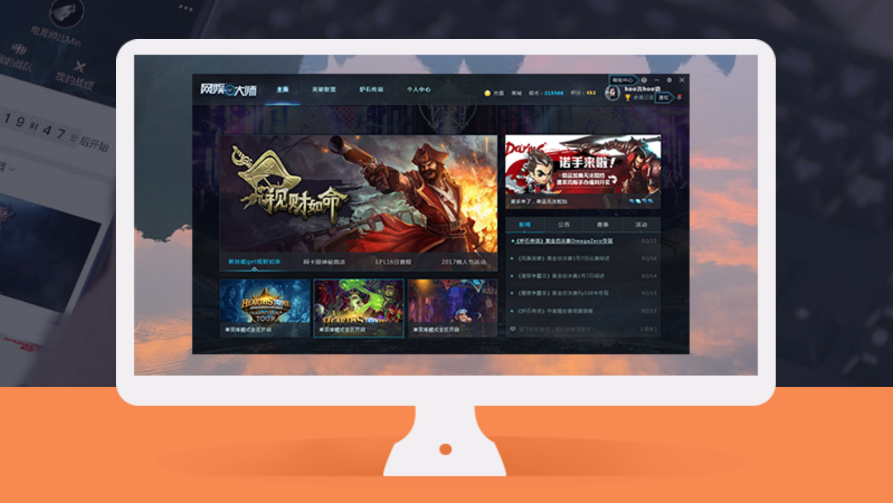

-
网娱大师APP
- 网娱大师APP致力于打造互联网平台落地线下网咖的O2O模式，连接“互联网+”的“最后一公里”，平台化跨接网咖、电竞、互联网三者，并实现利益共享。
- Java Try it
-
网娱大师Web
- 网娱大师web端提供一体化的赛事参与管理解决方案。赛事管理者可以创建赛事进行发布，通过web站点管理报名选手，跟进赛事整体状态进程；参赛选手可通过web进行报名参赛，了解比赛进程与对手信息。
- Java Try it
-
网娱大师PC
- 网娱大师PC端拥有自动化赛事执行能力。通过使用平台内自有账号解决比赛组织中游戏大区不同问题。利用自动化系统开设房间，缩减赛前准备时间，提高赛事整体执行效率。且赛事为参赛者、赛事组织者提供提供完整的赛事数据结果。
- Java Try it